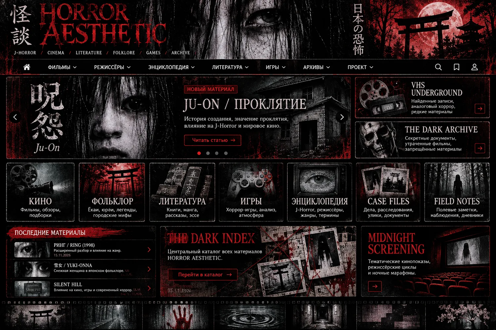
VISUAL COLLECTION · 2026
Homepage concept / Концепт главной страницы
Главная визуальная концепция: J-Horror, красная луна, тории и призрачный силуэт.
Открыть изображение ↗Коллекция визуальных концептов HORROR AESTHETIC: J-Horror, японский фольклор, кинопостеры, обложки, VHS-эстетика и архивные образы. Откройте любую работу в полном размере.
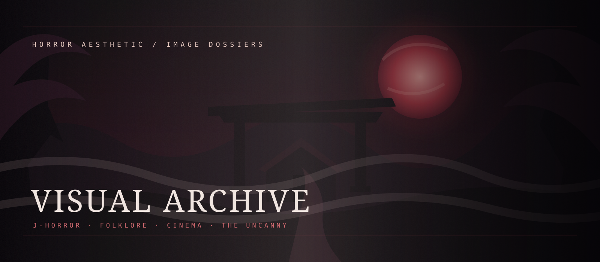

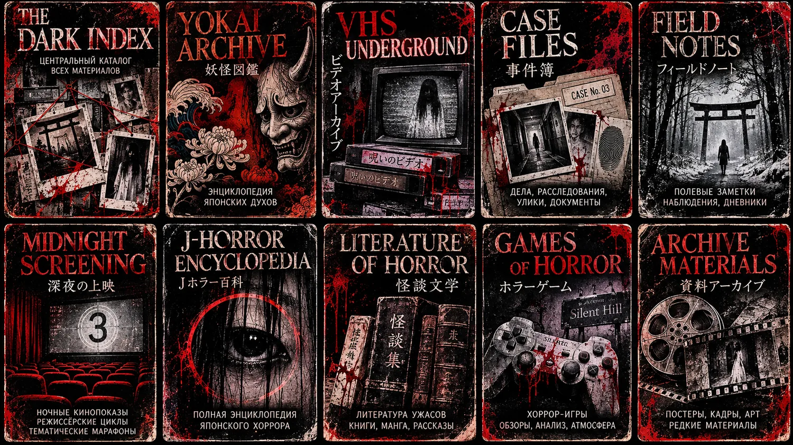
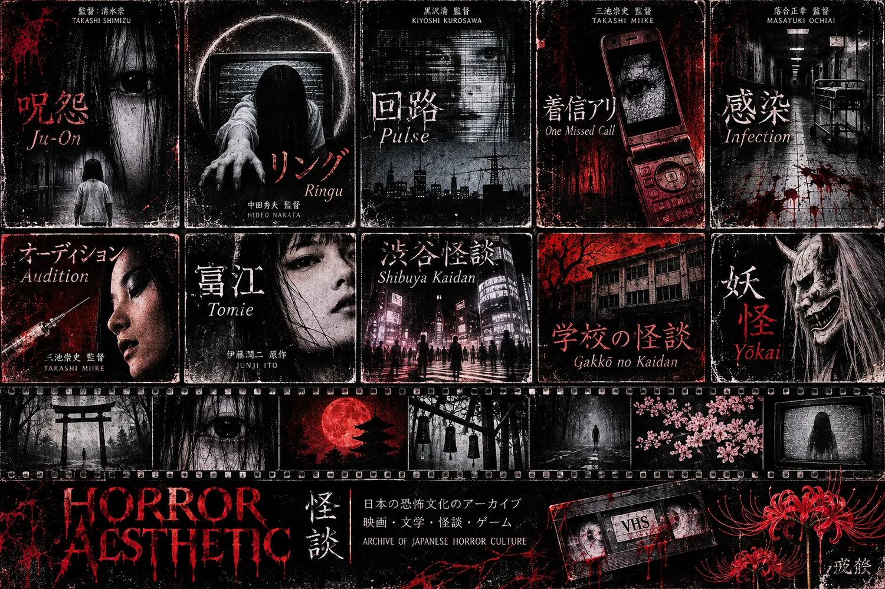
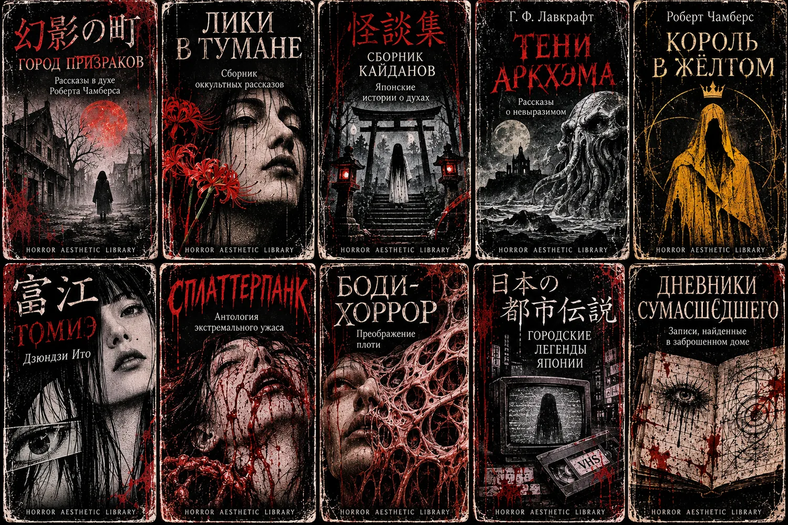
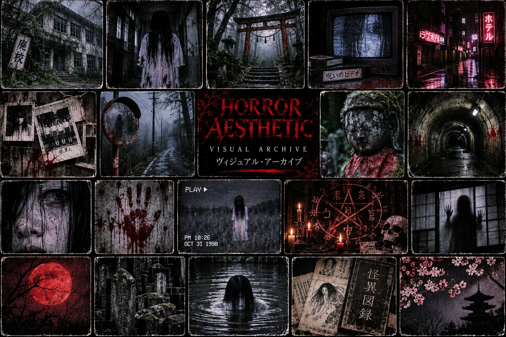
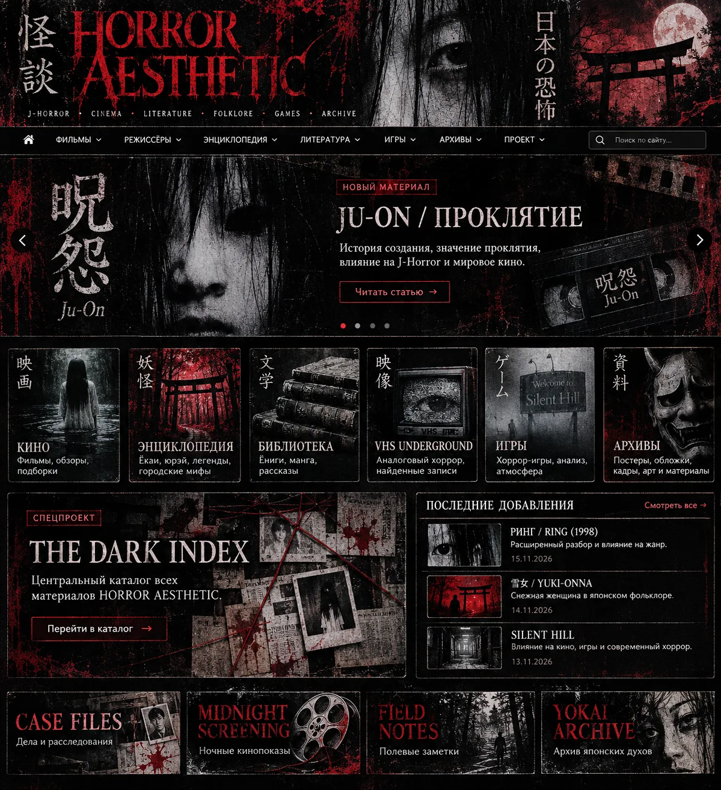
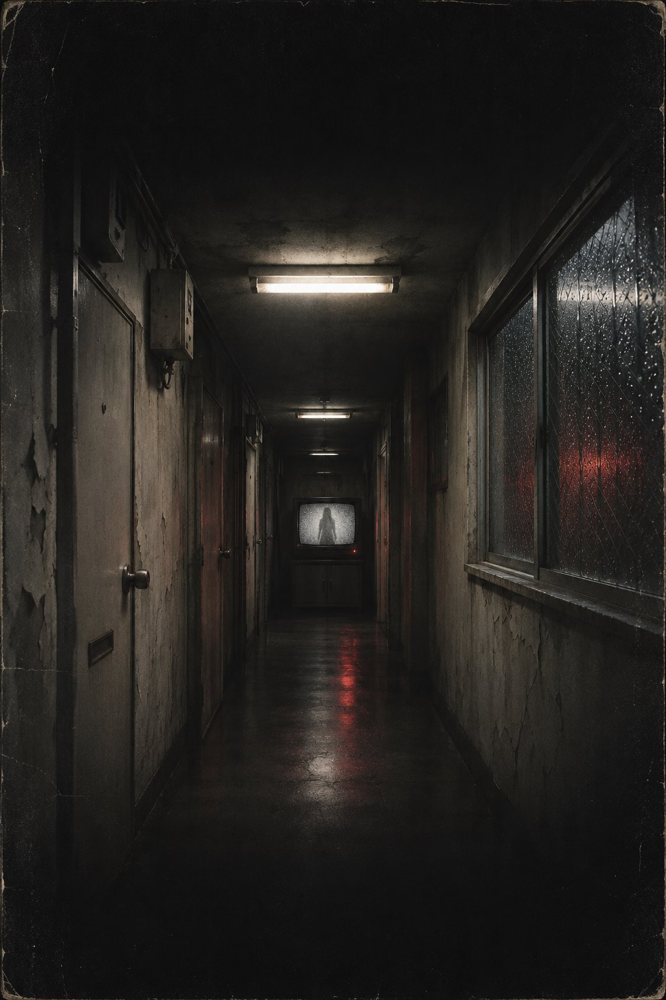
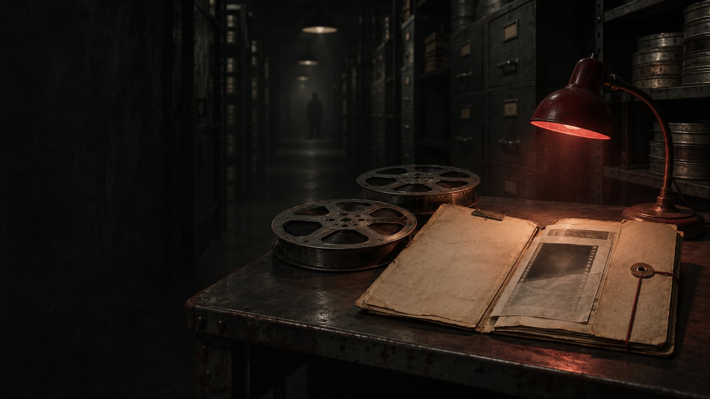


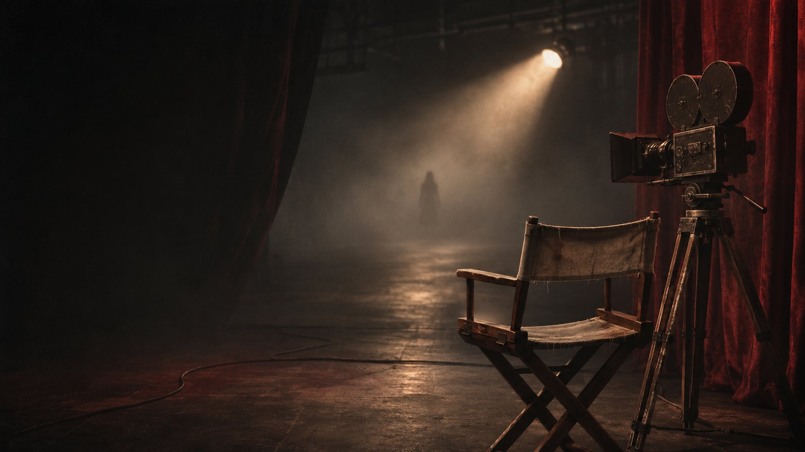
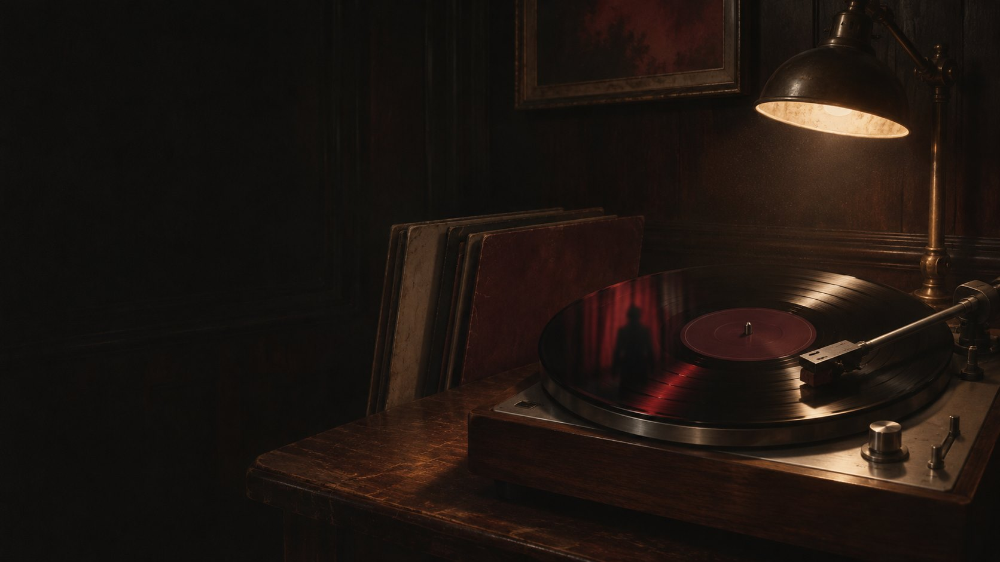